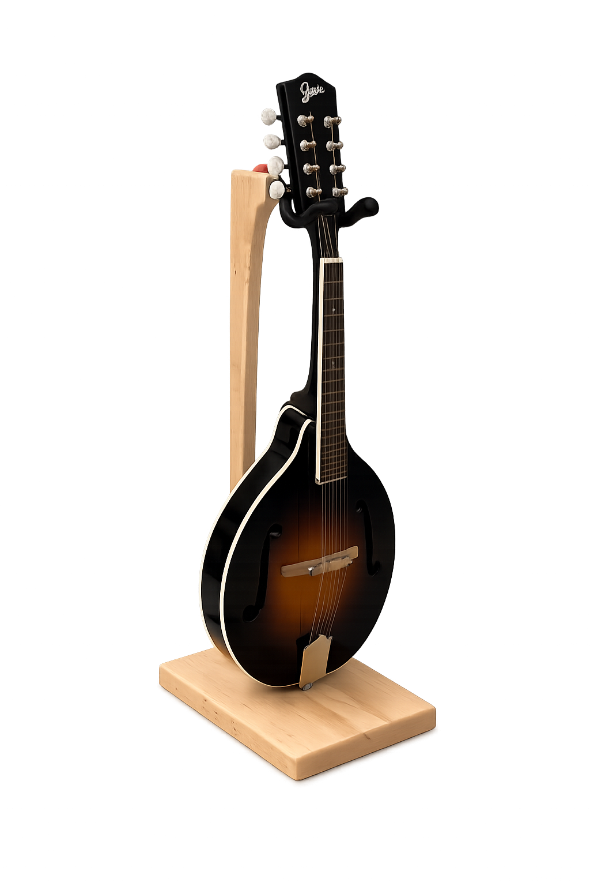
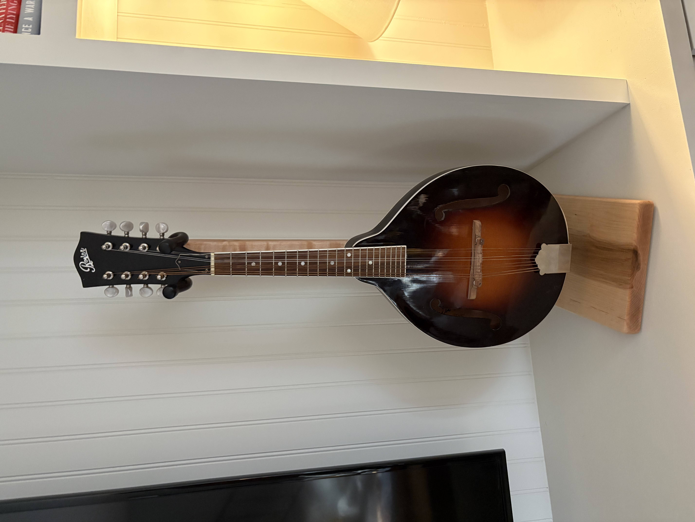

The Sophie is handcrafted from curly maple and designed specifically for mandolin players who want both stability and refined simplicity.
Each stand is shaped, sanded, and finished by hand using natural oil to enhance the wood grain while providing long-lasting durability.
Interested in ordering The Sophie? Contact me directly.